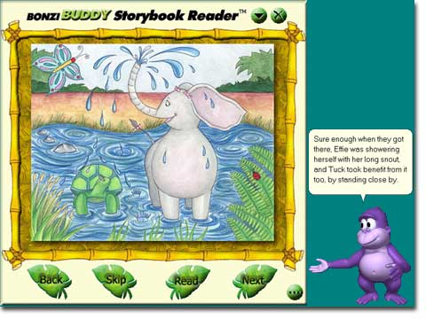

|
| New! "BONZI and the Polizoof!" Interactive Storybook! |
| My first interactive storybook is finally here! I've
titled it, "BONZI and the Polizoof!" I've even created interactive software
to help children of all ages learn to read! I've designed my software to be fun and
entertaining as well as educational!  Copyright © 2003 by BONZI Software, Inc. All Rights Reserved
The story, 'Bonzi and the Polizoof!' is about a baby gorilla named "BONZI." The story begins with BONZI and his friend Spot, discovering a black box deep in the jungle. From there, the journey begins! BONZI and Spot travel the jungle sharing their new discovery with all their friends! What is the "Storybook Reader" Module for BonziBUDDY? The "Storybook Reader" add-on module is my software that allows you and I to read stories together. I've designed several settings with my storybook software:
The "BONZI and the Polizoof!" storybook, includes my Interactive Storybook reader software -- FREE! This will enable us to enjoy "BONZI and the Polizoof!" for years to come. In addition, I am currently developing a series of books that will all work with my Interactive Storybook reader software! "When you help a child learn to read, you help open the door to a whole new world!" Join "BONZI" and his friends in the first of a series of interactive children's books being made available for BonziBUDDY! |
SPECIAL OFFER:
For a limited time, you get "BONZI and the Polizoof!" here
online for only $14.95 (Regularly |
System Requirements:Copyright © 1995 - 2003 BONZI Software, Inc. Windows, Microsoft Internet Explorer, and Microsoft are registered trademarks of Microsoft Corporation. BonziBUDDY and BONZI are trademarks of BONZI Software, Inc. All rights and liabilities with respect to BonziBUDDY belong solely to BONZI Software, Inc. Copyright © 1995 - 2003 - All Rights Reserved. |